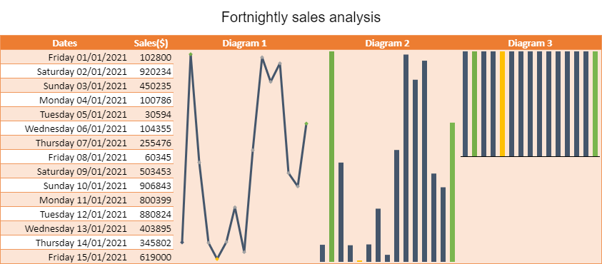
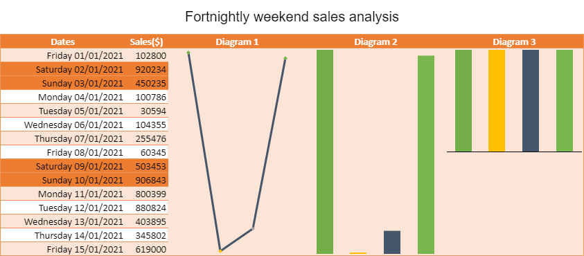

You can create column, line, and winloss sparklines in SpreadJS using the setSparkline method. It accepts different parameters such as the location of the cell, sparkline type, sparkline settings, and the type of data range.
There are two types of data ranges that can be used to create a column, line, and winloss sparkline using methods - continuous and non-continuous cell ranges.
The setSparkline method accepts the dataRange parameter where you can provide data ranges. For example, A1:B10, D12:E20.
The following image shows the unit sales of a car parts company over a period of a fortnight. The data is supported visually by the column, line, and winloss sparklines.

| JavaScript |
Copy Code
|
|---|---|
spread = new GC.Spread.Sheets.Workbook(document.getElementById('ss'), { sheetCount: 1 }); var activeSheet = spread.getActiveSheet(); // set data activeSheet.addSpan(0, 0, 1, 5); activeSheet.getCell(0, 0, GC.Spread.Sheets.SheetArea.viewport).value("Fortnightly sales analysis").font("20px Arial").hAlign(GC.Spread.Sheets.HorizontalAlign.center).vAlign(GC.Spread.Sheets.VerticalAlign.center); var table1 = activeSheet.tables.add("table1", 1, 0, 16, 5, GC.Spread.Sheets.Tables.TableThemes.medium3); table1.filterButtonVisible(false); activeSheet.setValue(1, 0, "Dates"); activeSheet.setValue(1, 1, "Sales($)"); activeSheet.setValue(1, 2, "Diagram 1"); activeSheet.setValue(1, 3, "Diagram 2"); activeSheet.setValue(1, 4, "Diagram 3"); activeSheet.getRange("A2:E2").hAlign(GC.Spread.Sheets.HorizontalAlign.center); // set date var now = new Date(); var daysOfYear = []; for (var d = new Date(2021, 0, -1); d <= now; d.setDate(d.getDate() + 1)) { daysOfYear.push(new Date(d)); } for (var i = 2; i < 17; i++) { activeSheet.setValue(i, 0, daysOfYear[i]); } // set values activeSheet.getRange(-1, 0, -1, 1).formatter("dddd dd/mm/yyyy"); activeSheet.setValue(2, 1, 102800); activeSheet.setValue(3, 1, 920234); activeSheet.setValue(4, 1, 450235); activeSheet.setValue(5, 1, 100786); activeSheet.setValue(6, 1, 30594); activeSheet.setValue(7, 1, 104355); activeSheet.setValue(8, 1, 255476); activeSheet.setValue(9, 1, 60345); activeSheet.setValue(10, 1, 503453); activeSheet.setValue(11, 1, 906843); activeSheet.setValue(12, 1, 800399); activeSheet.setValue(13, 1, 880824); activeSheet.setValue(14, 1, 403895); activeSheet.setValue(15, 1, 345802); activeSheet.setValue(16, 1, 619000); var data = new GC.Spread.Sheets.Range(2, 1, 15, 1); // add setting for sparkline to be created var setting = new GC.Spread.Sheets.Sparklines.SparklineSetting(); setting.options.showMarkers = true; setting.options.lineWeight = 3; setting.options.displayXAxis = true; setting.options.showFirst = true; setting.options.showLast = true; setting.options.showLow = true; setting.options.showHigh = true; setting.options.showNegative = true; setting.options.seriesColor = "Text 2 1"; setting.options.firstMarkerColor = "Text 2 3"; setting.options.negativeColor = "Accent 2 1"; setting.options.markersColor = "Accent 3 1"; setting.options.lowMarkerColor = "Accent 4 1"; setting.options.highMarkerColor = "Accent 6 1"; setting.options.lastMarkerColor = "Accent 6 6"; setting.options.axisColor = "Text 1 1"; // LINESPARKLINE activeSheet.setSparkline(2, 2, data , GC.Spread.Sheets.Sparklines.DataOrientation.vertical , GC.Spread.Sheets.Sparklines.SparklineType.line , setting , GC.Spread.Sheets.Sparklines.DataOrientation.vertical ); // COLUMNSPARKLINE activeSheet.setSparkline(2, 3, data , GC.Spread.Sheets.Sparklines.DataOrientation.vertical , GC.Spread.Sheets.Sparklines.SparklineType.column , setting , GC.Spread.Sheets.Sparklines.DataOrientation.vertical ); // WINLOSSSPARKLINE activeSheet.setSparkline(2, 4, data , GC.Spread.Sheets.Sparklines.DataOrientation.vertical , GC.Spread.Sheets.Sparklines.SparklineType.winloss , setting , GC.Spread.Sheets.Sparklines.DataOrientation.vertical ); |
|
You can provide non-continuous data ranges to create a sparkline where random values from a worksheet can be added to a new user-defined custom name. This custom name can be passed in the setSparkline dataRange parameter.
For example, data cells like B4, B5, B11, and B12 can be added to a custom name “range” to create a non-continuous range.
| JavaScript |
Copy Code
|
|---|---|
// Create a non continuous range spread.addCustomName("range", "=Sheet1!$B$4,Sheet1!$B$5,Sheet1!$B$11,Sheet1!$B$12", 0, 0, "non-continuous range"); |
|
The following image shows the unit sales of a car parts company where specific cell values such as the weekends (Saturdays and Sundays) are chosen from a period of the fortnight to create visually supporting sparklines.
